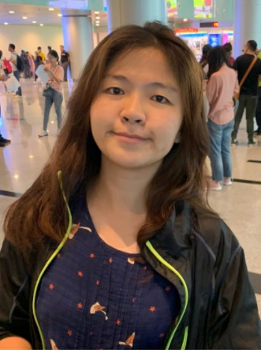

Yi-Jheng Huang (黃怡錚)
Assistant Professor
Department of Information Communication
Yuan Ze University
Taoyuan, Taiwan
Email:
yjhuang@saturn.yzu.edu.tw
Tel: +886-3-4638800 ext. 2645
Research Interests:
Computer Graphics
Mixed Reality
Human-Computer Interaction
About
Yi-Jheng Huang received her BS degree in Department of Computer Science and Information Engineering from National Dong Hwa University, Taiwan, and her MS and PhD degrees in Department of Computer Science from National Chiao Tung University, Taiwan. Now, she is an assistant professor in the Department of Information Communication, Yuan Ze University. Her research interests include computer graphics, mixed reality, and human-computer interaction.
Journal Papers
-
Yi-Jheng Huang ,Kang-Yi Liu, Suiang-Shyan Lee, I-Cheng Yeh,
"Evaluation of a Hybrid of Hand Gesture and Controller Inputs in Virtual Reality,"
International Journal of Human–Computer Interaction,
Vol. 37, No. 2, pp. 169-180,
2021.
(SCI, Rank: 13/22, IF=1.713)
[Paper]
-
Yi-Jheng Huang, Wen-Chieh Lin, I-Cheng Yeh, Tong-Yee Lee,
"Geometric and Textural Blending for 3D Model Stylization,"
IEEE Transactions on Visualization and Computer Graphics,
Vol. 24, No. 2, pp. 1114-1126,
2018.
(SCI, Rank: 11/104, IF=3.78)
[Paper]
-
Suiang-Shyan Lee, Yi-Jheng Huang, Ja-Chen Lin,
"Protection of 3D Models using Cross Recovery,"
Multimedia Tools and Applications,
Vol. 76, No. 1, pp. 243-264,
2017.
(SCI, Rank: 42/104, IF=1.54)
[Paper]
-
Yi-Jheng Huang, Shu-Yuan Zhan, Wen-Chieh Lin, Shan-Yu Chuang,
"Making and Animating Transformable 3D Models,"
Computer & Graphics,
Vol. 54, pp. 127-134,
2016.
(SCI, Rank: 41/106, IF=1.12)
(Proc. CAD/Graphics 2015)
[Paper]
-
Sai-Keung Wong, Wen-Chieh Lin, Chun-Hung Hung, Yi-Jheng Huang, Shing-Yeu Lii,
"Radial View Based Culling for Continuous Self-Collision Detection of Skeletal Models,"
ACM Transactions on Graphics,
Vol. 32, No. 4, pp. 1-10,
2013.
(Proc. SIGGRAPH 2013)
(SCI, Rank: 1/106, IF=4.218)
-
Ting-Chieh Huang, Yi-Jheng Huang, Wen-Chieh Lin,
"Real-time Horse Gait Synthesis,"
Computer Animation and Virtual Worlds,
Vol. 24, No. 2, pp. 87–95,
2012.
(Proc. CASA 2012)
(SCI, Rank: 88/106, IF=0.548)
-
Wen-Chieh Lin, Yi-Jheng Huang,
"Animating Rising Up From Various Lying Postures and Environments,"
the Visual Computer,
Vol. 28, No. 4, pp. 413-424,
2012.
(SCI, Rank: 50/106, IF=1.06)
Conference Papers
-
Yi-Jheng Huang, Wen-Chieh Lin, Suiang-Shyan Lee, Xun-Yi Huang,
"Using Computer-Generated Examples to Support Idea Generation,"
International Conference on Fuzzy Theory and Its Applications (iFUZZY) 2020.
National Chiao Tung University, Hsinchu, Taiwan,
November 4-7, 2020
(H-index=4)
-
李玫, 黃怡錚, 李相賢,
"語意差異法問卷數據視覺化,"
2020年電腦圖學研討會.
國立交通大學,
July 9-10, 2020
-
吳翠華, 林淑璋, 葉奕成, 黃怡錚, 黃莉婷, 李羿禎,
"VR運用於初級日語會話學習,"
銘傳大學2020年國際學術研討會.
銘傳大學,
May 5, 2020
-
林淑璋, 吳翠華, 葉奕成, 黃怡錚, 黃莉婷, 李羿禎,
"初級日語會話 VR 教材試作之學習過程,"
2019年台湾日本語‧日本文学研究国際シンポジウム.
東吳大學,
December 14, 2019
-
Yi-Jheng Huang,
"Color-Based Edge Detection on Mesh Surface,"
Prof. of the 12th
ACM SIGGRAPH Conference and Exhibition on Computer Graphics and Interactive Techniques in Asia (SIGGRAPH Asia) 2019.
Brisbane, Australia,
November 17-20, 2019
(Poster)
-
Suiang-Shyan Lee, Yi-Jheng Huang and Ja-Chen Lin,
"Web-VC: Visual Cryptography for Web Image,"
Prof. of the 26th
IEEE International Conference on Image Processing (ICIP) 2019.
Taipei, Taiwan,
September 22-25, 2019
(H-index=97)
-
黃品瑄, 黃立, 黃怡錚, 林文杰,
"探討使用者交易資料的視覺化分析系統,"
2019年電腦圖學研討會.
元智大學,
June 27-28, 2019
(最佳論文獎)
-
黃怡錚, 劉康宜, 葉奕成,
"混搭控制器與手勢輸入於沉浸式應用的操作效益探討,"
2019年電腦圖學研討會.
元智大學,
June 27-28, 2019
-
Chong-Wen Chen, Yi-Jheng Huang,
"Clarifying Barriers to Sustainable Development: the Context of Unsustainable Behavior,"
Proc. of the 2nd
International Conference on Economic Development and Growth, Economic Policy and Rural Development (EGER) 2019.
Tokyo, Japan,
February 23-24, 2019
-
Yi-Jheng Huang, Wen-Chieh Lin, Suiang-Shyan Lee, Xun-Yiuang Huang,
"ComposIt: 3D Model Composer for Inspiring Creations,"
Pacific Graphics 2017.
(Poster)
-
Yi-Jheng Huang, Takanori Fujiwara, Yun-Xua Lin, Wen-Chieh Lin, Kwan-Liu Ma,
"A Gesture System for Graph Visualization in Virtual Reality Environments,"
Proc. of the 10th
IEEE Pacific Visualization Symposium (PacificVis) 2017.
(Short paper)
-
Sai-Keung Wong, Wen-Chieh Lin, Yu-Shuen Wang, Chun-Hung Hung, Yi-Jheng Huang,
"Dynamic Radial View Based Culling for Continuous Self-collision Detection,"
Proc. of the 28th
ACM SIGGRAPH Symposium on Interactive 3D Graphics and Games (I3D) 2014.
(H-index=12)
-
Wei-Chien Cheng, Wen-Chieh Lin, Yi-Jheng Huang,
"Controllable and Real-time Reproducible Perlin Noise,"
pp. 86-97,
Smart Graphics 2014.
(Best Paper Award)
-
Yi-Jheng Huang, Wen-Chieh Lin, Yu-Jr Shiang,
"Synthesis of standing-up Motion,"
Computer Graphics Workshop 2010.
(Best Paper Award)